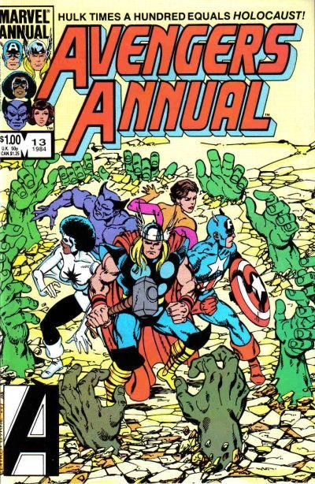
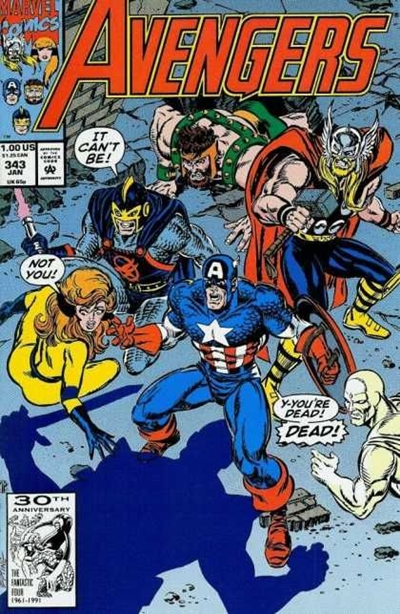
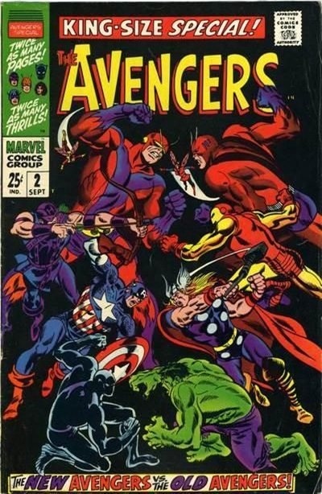
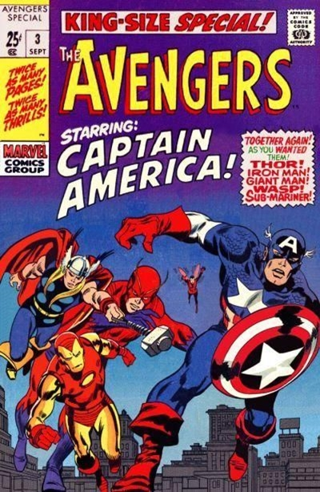

De todos os grupos de heróis da editora Marvel, os Vingadores são, sem dúvida, um dos mais populares. O grupo é, em certo sentido, uma resposta da Marvel à “Liga da Justiça”, editada pela concorrente DC Comics desde 1960.
Assim como a “Liga”, o gibi dos “Vingadores” reunia alguns dos maiores heróis da casa na época: Thor, Homem de Ferro, Hulk, Homem-Formiga e Vespa. O Hulk foi descartado logo, sendo substituído por um velho herói que a Marvel há tempos planejava trazer de volta: “Capitão América”. A equipe tem a estrutura de um clube britânico, possuindo mesmo um mordomo inglês, o fiel Jarvis.
No universo fictício de histórias em quadrinhos da Marvel (o Universo Marvel), a equipe tradicionalmente é a primeira a ser chamada pelo governo dos EUA quando defrontado por desafios de ordem cósmica. No número de estréia, Loki, o Deus nórdico da trapaça (das revistas de “Thor”), traçou uma vingança contra seu meio-irmão asgardiano, atraindo o Hulk para concretizar seu plano, o velhaco enviou um pedido de socorro para Thor, que acidentalmente também foi recebido pelo Homem-Formiga, a Vespa e o Homem de Ferro. Após derrotarem o vilão, Formiga conclui que os cinco trabalharam bem juntos e sugeriu que eles formassem uma força conjunta. Assim nasciam os Vingadores.
O elenco da nova historieta mudava constantemente, conforme as necessidades do roteirista que assumia a revista: a partir do número 16 de “Avengers” entraram Gavião Arqueiro (vindo da revista do “Homem de Ferro") Mercúrio & Feiticeira Escarlate (vindos de “X-Men”) — os três, ex-vilões regenerados. Ao trio, seguiu-se Pantera Negra (de “Quarteto Fantástico”), Visão e muitos outros.
Além da constante troca de elenco, houve também estranhas trocas de identidade. O Homem-Formiga, que em sua primeira aparição anos antes era apenas um cientista, e não um super-herói, se tornou “O Gigante” e, a seguir, "Golias”, para depois se transformar no “Jaqueta Amarela” e voltar à identidade civil de Henry Pym. A identidade de “Golias” acabou sendo assumida pelo Gavião Arqueiro que, mais tarde, desistiu da idéia e voltou para seus arcos e flechas.
O Capitão América se mostrou um dos personagens mais populares, graças aos roteiros e desenhos de Lee, Kirby e Heck, ganhando, inclusive, sua própria série, na revista “Strange Tales”.
|  |  |
|  |  |